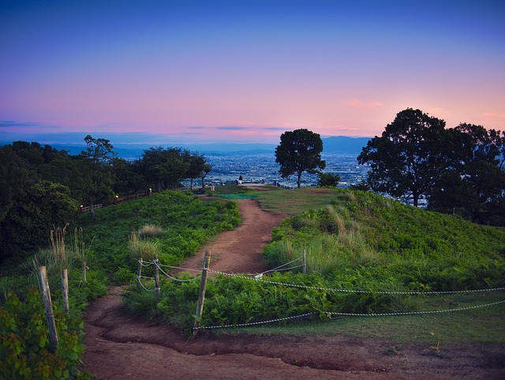

Japan - Family Itinerary
Day 1-3: Tokyo

- Spend a day at Tokyo Disneyland or Tokyo DisneySea for a magical experience with the family.
- Visit Ueno Zoo and Tokyo National Museum to learn about Japan's wildlife and culture.
- Enjoy a relaxing boat cruise along the Sumida River, passing by iconic landmarks like Tokyo Skytree and Asakusa.
Day 4-6: Kyoto

- Explore Kyoto's family-friendly attractions, including Kyoto Aquarium and Kyoto Railway Museum.
- Take a day trip to Nara to visit Nara Park and Todai-ji Temple, where friendly deer roam freely.
- Enjoy a traditional rickshaw ride through Arashiyama Bamboo Grove and scenic countryside.
Day 7-9: Osaka

- Visit Osaka Aquarium Kaiyukan, one of the largest aquariums in the world, to see marine life from around the globe.
- Spend a day at Universal Studios Japan, enjoying family-friendly rides and entertainment.
- Explore Osaka Castle and its surrounding park for outdoor picnics and leisurely walks.